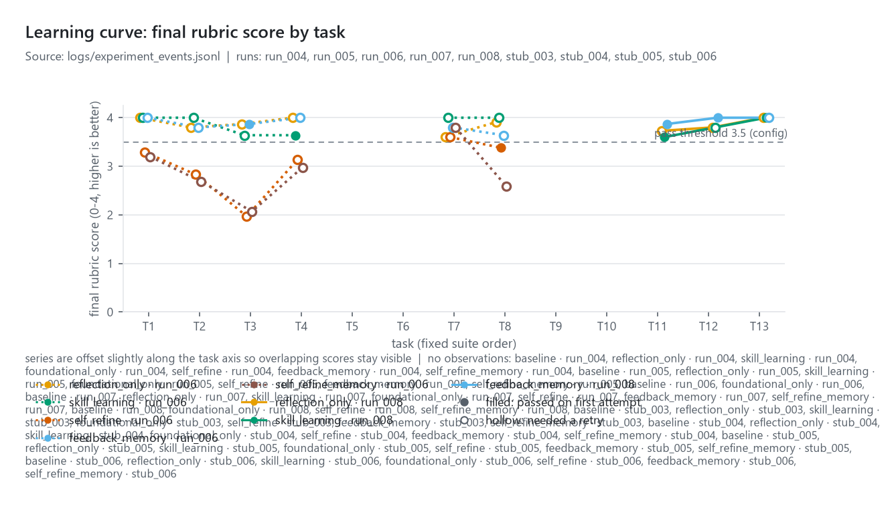
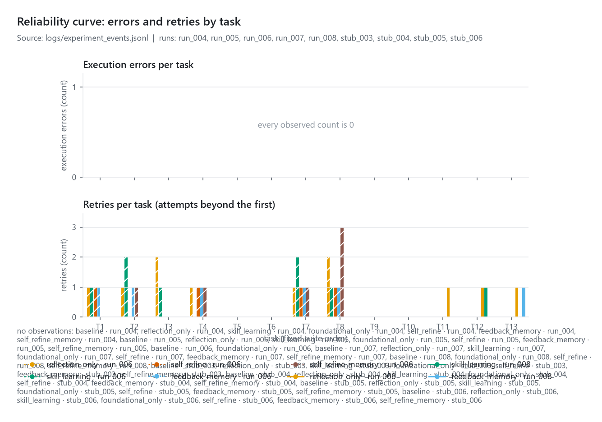
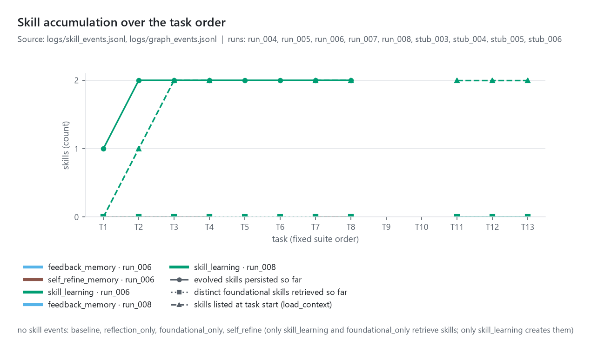
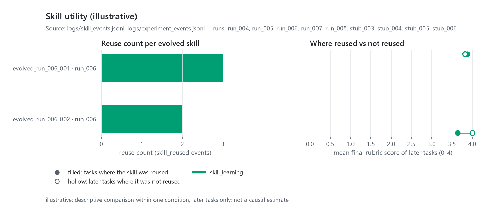
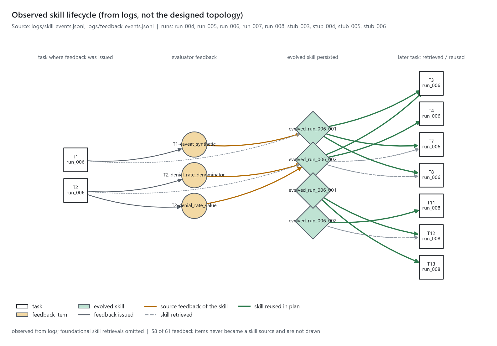
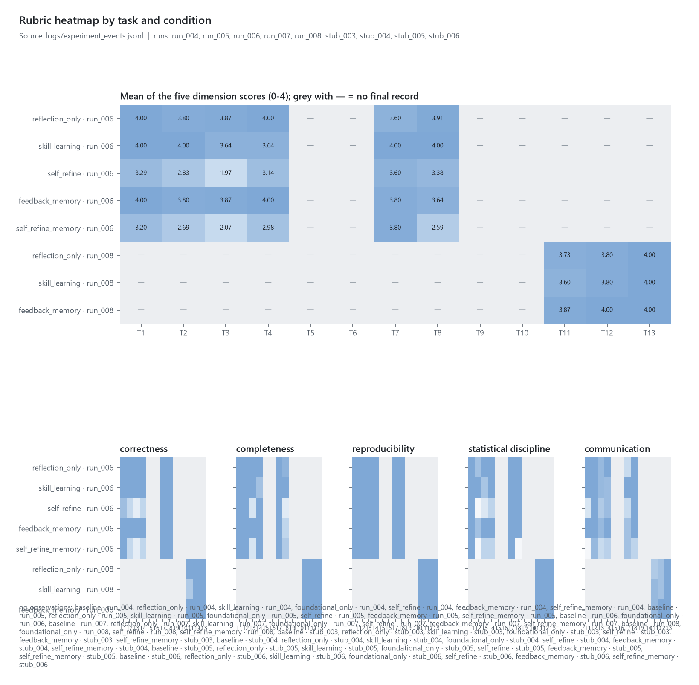

claims-skill-loop — build & experiment progress
Generated 2026-09-08T09:57:28+00:00 · auto-refreshes every 30 s · tracker updated 2026-09-07T00:45:16+00:00
Overall completion
Overall completion (weighted work units)
100%
62 of 62 units complete
· 0 units blocked
· acceptance gates: passed
ETA
rough ETA ≈ 0.0 min
computed 2026-09-07T00:45:16+00:00
· median 80.0 s/unit
over 55 completed units
Rough ETA = remaining weighted units x median observed seconds per completed unit; not a commitment.
Agent workload
configured
7
○ queued
0
◐ running
1
■ blocked
0
◆ review
0
● done
6
✕ failed
0
| Agent | Role | Status | Current work | Latest artifact | Elapsed | Progress | ETA | Blocked by | Note |
|---|---|---|---|---|---|---|---|---|---|
| L0 | Lead: integration, LangGraph core, provider, operator orchestration, acceptance, experiment 2 | ◐ running | Experiment 2 shipped | articles/loop-engineering-markdown-skills/article.md | 44h 51m | 16/16 units · 100% | rough ETA ≈ 0.0 min | — | Experiment 2: rule learner, evaluator 1.1, run_004, write-up v2, article + artifact |
| A1 | SDD architect | ● done | consistency pass | docs/plan.md | 21m 27s | 8/8 units · 100% | — | — | accepted by lead: SDD docs, configs, README |
| A2 | Data steward | ● done | Dataset download and profiling | data/processed/manifest.json | 15m 03s | 5/5 units · 100% | — | — | accepted by lead: manifest, profile, README, 54 tests passing |
| A3 | Evaluation engineer: tasks, rubric, goldens, evaluator | ● done | Task suite, rubric, golden pack, evaluator | goldens/T2_portfolio_metrics.json | 26m 50s | 10/10 units · 100% | — | — | accepted by lead: tasks, rubric (152 checks), goldens, evaluator (24 tests) |
| A4 | Skill-system engineer | ● done | Skill store, validator, tests (resumed) | src/skill_store.py | 3h 25m | 7/7 units · 100% | — | — | accepted by lead: store, validator, 26 tests |
| A5 | Observability engineer | ● done | Dashboard v2, chart verification, tests (resumed) | artifacts/dashboard/progress.html | 9h 31m | 8/8 units · 100% | — | — | accepted by lead: logger, dashboard v2, charts, 17 tests |
| A6 | Analysis engineer: deterministic executor T1-T8 | ● done | Deterministic executor T1-T8 | src/task_runner.py | 25m 26s | 8/8 units · 100% | — | — | accepted by lead: executor T1-T8, 22 tests, deterministic |
Blocked work
No blocked work.
Experiment
Snapshot
logs/experiment_status.json updated 2026-09-08T09:57:28+00:00 · logs logs/experiment_events.jsonlrun run_004
mode
rule_learner · provider rule_learner · model rule-learner-v1 · operator deterministic-rule-learner · freeze 1566c5698a50 · created 2026-09-07T00:33:10+00:00| Condition | Status | Current task · node | Pending operator request | Tasks done | Operator steps used / cap | Retries | Exec. errors | Skills created / retrieved | Mean score | Rough ETA |
|---|---|---|---|---|---|---|---|---|---|---|
| baseline | ● done | — | — | 8/8 | 16/64 | 8 | 0 | 0 / 0 | — | rough ETA ≈ 0.0 min |
| reflection_only | ● done | — | — | 8/8 | 24/64 | 8 | 0 | 0 / 0 | — | rough ETA ≈ 0.0 min |
| skill_learning | ● done | — | — | 8/8 | 38/64 | 8 | 0 | 6 / 61 | — | rough ETA ≈ 0.0 min |
Per-task scores
| Condition | T1 | T2 | T3 | T4 | T5 | T6 | T7 | T8 | T11 | T12 | T13 | Mean |
|---|---|---|---|---|---|---|---|---|---|---|---|---|
| baseline | 4.00 | 4.00 | 4.00 | 4.00 | 4.00 | 4.00 | 4.00 | 4.00 | — | — | — | 4.00 |
| reflection_only | 4.00 | 4.00 | 4.00 | 4.00 | 4.00 | 4.00 | 4.00 | 4.00 | — | — | — | 4.00 |
| skill_learning | 4.00 | 4.00 | 4.00 | 4.00 | 4.00 | 4.00 | 4.00 | 4.00 | — | — | — | 4.00 |
Final rubric score per task (0–4, higher is better) · ✓ = passed on the first attempt
· — = no final record yet · columns follow the configured task order.
run run_005
mode
manual · provider manual · model claude-haiku-4-5-20251001 · operator claude-code-subagent · freeze 64b7292e8214 · created 2026-09-07T09:19:31+00:00| Condition | Status | Current task · node | Pending operator request | Tasks done | Operator steps used / cap | Retries | Exec. errors | Skills created / retrieved | Mean score | Rough ETA |
|---|---|---|---|---|---|---|---|---|---|---|
| reflection_only | ● done | — | — | 4/4 | 16/64 | 6 | 0 | 0 / 0 | — | rough ETA ≈ 0.0 min |
| skill_learning | ● done | — | — | 4/4 | 18/64 | 4 | 0 | 1 / 3 | — | rough ETA ≈ 0.0 min |
| self_refine | ● done | — | — | 4/4 | 12/64 | 2 | 0 | 0 / 0 | — | rough ETA ≈ 0.0 min |
Per-task scores
| Condition | T2 | T3 | T4 | T7 | T11 | T12 | T13 | Mean |
|---|---|---|---|---|---|---|---|---|
| reflection_only | 4.00 | 3.87 | 3.84 | 3.60 | — | — | — | 3.83 |
| skill_learning | 3.80 | 3.51 | 4.00 | 3.80 | — | — | — | 3.78 |
| self_refine | 2.89 | 1.61 | 3.14 | 3.60 | — | — | — | 2.81 |
Final rubric score per task (0–4, higher is better) · ✓ = passed on the first attempt
· — = no final record yet · columns follow the configured task order.
run run_006
mode
manual · provider manual · model claude-haiku-4-5-20251001 · operator claude-code-subagent · freeze 59fb61d35fe8 · created 2026-09-07T15:34:09+00:00| Condition | Status | Current task · node | Pending operator request | Tasks done | Operator steps used / cap | Retries | Exec. errors | Skills created / retrieved | Mean score | Rough ETA |
|---|---|---|---|---|---|---|---|---|---|---|
| reflection_only | ● done | — | — | 6/6 | 23/64 | 8 | 0 | 0 / 0 | 3.86 | rough ETA ≈ 0.0 min |
| skill_learning | ● done | — | — | 6/6 | 31/64 | 7 | 0 | 2 / 7 | 3.88 | rough ETA ≈ 0.0 min |
| self_refine | ● done | — | — | 6/6 | 21/64 | 4 | 0 | 0 / 0 | 3.04 | rough ETA ≈ 0.0 min |
| feedback_memory | ● done | — | — | 6/6 | 16/64 | 5 | 0 | 0 / 0 | 3.85 | rough ETA ≈ 0.0 min |
| self_refine_memory | ● done | — | — | 6/6 | 24/64 | 6 | 0 | 0 / 0 | 2.89 | rough ETA ≈ 0.0 min |
Per-task scores
| Condition | T1 | T2 | T3 | T4 | T7 | T8 | T11 | T12 | T13 | Mean |
|---|---|---|---|---|---|---|---|---|---|---|
| reflection_only | 4.00 | 3.80 | 3.87 | 4.00 | 3.60 | 3.91 | — | — | — | 3.86 |
| skill_learning | 4.00 | 4.00 | 3.64 | 3.64 ✓ | 4.00 | 4.00 | — | — | — | 3.88 |
| self_refine | 3.29 | 2.83 | 1.97 | 3.14 | 3.60 | 3.38 ✓ | — | — | — | 3.04 |
| feedback_memory | 4.00 | 3.80 | 3.87 ✓ | 4.00 | 3.80 | 3.64 | — | — | — | 3.85 |
| self_refine_memory | 3.20 | 2.69 | 2.07 | 2.98 | 3.80 | 2.59 | — | — | — | 2.89 |
Final rubric score per task (0–4, higher is better) · ✓ = passed on the first attempt
· — = no final record yet · columns follow the configured task order.
run run_007
mode
manual · provider manual · model claude-haiku-4-5-20251001 · operator claude-code-subagent · freeze 74e64e1d38e3 · created 2026-09-08T07:27:45+00:00| Condition | Status | Current task · node | Pending operator request | Tasks done | Operator steps used / cap | Retries | Exec. errors | Skills created / retrieved | Mean score | Rough ETA |
|---|---|---|---|---|---|---|---|---|---|---|
| reflection_only | ● done | — | — | 4/4 | 10/64 | 3 | 0 | 0 / 0 | — | rough ETA ≈ 0.0 min |
| skill_learning | ● done | — | — | 4/4 | 12/64 | 1 | 0 | 1 / 7 | — | rough ETA ≈ 0.0 min |
| feedback_memory | ● done | — | — | 4/4 | 6/64 | 1 | 0 | 0 / 0 | — | rough ETA ≈ 0.0 min |
Per-task scores
| Condition | T5 | T6 | T9 | T10 | T11 | T12 | T13 | Mean |
|---|---|---|---|---|---|---|---|---|
| reflection_only | 4.00 | 3.68 ✓ | 4.00 | 3.69 | — | — | — | 3.84 |
| skill_learning | 4.00 | 3.84 ✓ | 3.77 ✓ | 3.51 ✓ | — | — | — | 3.78 |
| feedback_memory | 4.00 | 3.68 ✓ | 3.52 ✓ | 3.64 ✓ | — | — | — | 3.71 |
Final rubric score per task (0–4, higher is better) · ✓ = passed on the first attempt
· — = no final record yet · columns follow the configured task order.
run run_008
mode
manual · provider manual · model claude-haiku-4-5-20251001 · operator claude-code-subagent · freeze bab215a5fbcc · created 2026-09-08T09:39:48+00:00| Condition | Status | Current task · node | Pending operator request | Tasks done | Operator steps used / cap | Retries | Exec. errors | Skills created / retrieved | Mean score | Rough ETA |
|---|---|---|---|---|---|---|---|---|---|---|
| reflection_only | ● done | — | — | 3/3 | 9/64 | 3 | 0 | 0 / 0 | 3.84 | rough ETA ≈ 0.0 min |
| skill_learning | ● done | — | — | 3/3 | 5/64 | 1 | 0 | 0 / 4 | 3.80 | rough ETA ≈ 0.0 min |
| feedback_memory | ● done | — | — | 3/3 | 5/64 | 1 | 0 | 0 / 0 | 3.96 | rough ETA ≈ 0.0 min |
Per-task scores
| Condition | T11 | T12 | T13 | Mean |
|---|---|---|---|---|
| reflection_only | 3.73 | 3.80 | 4.00 | 3.84 |
| skill_learning | 3.60 ✓ | 3.80 | 4.00 ✓ | 3.80 |
| feedback_memory | 3.87 ✓ | 4.00 ✓ | 4.00 | 3.96 |
Final rubric score per task (0–4, higher is better) · ✓ = passed on the first attempt
· — = no final record yet · columns follow the configured task order.
run stub_003
mode
stub · provider stub · model deterministic-fixture-v1 · operator deterministic-fixture · freeze 64b7292e8214 · created 2026-09-07T09:17:56+00:00| Condition | Status | Current task · node | Pending operator request | Tasks done | Operator steps used / cap | Retries | Exec. errors | Skills created / retrieved | Mean score | Rough ETA |
|---|---|---|---|---|---|---|---|---|---|---|
| reflection_only | ● done | — | — | 4/4 | 22/64 | 9 | 0 | 0 / 0 | — | rough ETA ≈ 0.0 min |
| skill_learning | ● done | — | — | 4/4 | 27/64 | 9 | 0 | 1 / 3 | — | rough ETA ≈ 0.0 min |
| self_refine | ● done | — | — | 4/4 | 16/64 | 4 | 0 | 0 / 0 | — | rough ETA ≈ 0.0 min |
Per-task scores
| Condition | T2 | T3 | T4 | T7 | T11 | T12 | T13 | Mean |
|---|---|---|---|---|---|---|---|---|
| reflection_only | 4.00 | 4.00 | 4.00 | 4.00 | — | — | — | 4.00 |
| skill_learning | 4.00 | 4.00 | 4.00 | 4.00 | — | — | — | 4.00 |
| self_refine | 1.28 | 0.73 | 1.18 | 1.77 | — | — | — | 1.24 |
Final rubric score per task (0–4, higher is better) · ✓ = passed on the first attempt
· — = no final record yet · columns follow the configured task order.
run stub_004
mode
stub · provider stub · model deterministic-fixture-v1 · operator deterministic-fixture · freeze 59fb61d35fe8 · created 2026-09-07T15:30:14+00:00| Condition | Status | Current task · node | Pending operator request | Tasks done | Operator steps used / cap | Retries | Exec. errors | Skills created / retrieved | Mean score | Rough ETA |
|---|---|---|---|---|---|---|---|---|---|---|
| reflection_only | ● done | — | — | 6/6 | 32/64 | 13 | 0 | 0 / 0 | — | rough ETA ≈ 0.0 min |
| skill_learning | ● done | — | — | 6/6 | 41/64 | 13 | 0 | 3 / 8 | — | rough ETA ≈ 0.0 min |
| self_refine | ● done | — | — | 6/6 | 24/64 | 6 | 0 | 0 / 0 | — | rough ETA ≈ 0.0 min |
| feedback_memory | ● done | — | — | 6/6 | 32/64 | 13 | 0 | 0 / 0 | — | rough ETA ≈ 0.0 min |
| self_refine_memory | ● done | — | — | 6/6 | 24/64 | 6 | 0 | 0 / 0 | — | rough ETA ≈ 0.0 min |
Per-task scores
| Condition | T1 | T2 | T3 | T4 | T7 | T8 | T11 | T12 | T13 | Mean |
|---|---|---|---|---|---|---|---|---|---|---|
| reflection_only | 3.87 | 4.00 | 4.00 | 4.00 | 4.00 | 4.00 | — | — | — | 3.98 |
| skill_learning | 3.87 | 4.00 | 4.00 | 4.00 | 4.00 | 4.00 | — | — | — | 3.98 |
| self_refine | 1.38 | 1.28 | 0.73 | 1.18 | 1.77 | 1.55 | — | — | — | 1.31 |
| feedback_memory | 3.87 | 4.00 | 4.00 | 4.00 | 4.00 | 4.00 | — | — | — | 3.98 |
| self_refine_memory | 1.38 | 1.28 | 0.73 | 1.18 | 1.77 | 1.55 | — | — | — | 1.31 |
Final rubric score per task (0–4, higher is better) · ✓ = passed on the first attempt
· — = no final record yet · columns follow the configured task order.
run stub_005
mode
stub · provider stub · model deterministic-fixture-v1 · operator deterministic-fixture · freeze 74e64e1d38e3 · created 2026-09-08T07:23:53+00:00| Condition | Status | Current task · node | Pending operator request | Tasks done | Operator steps used / cap | Retries | Exec. errors | Skills created / retrieved | Mean score | Rough ETA |
|---|---|---|---|---|---|---|---|---|---|---|
| reflection_only | ● done | — | — | 4/4 | 18/64 | 7 | 0 | 0 / 0 | — | rough ETA ≈ 0.0 min |
| skill_learning | ● done | — | — | 4/4 | 23/64 | 7 | 0 | 1 / 4 | — | rough ETA ≈ 0.0 min |
| feedback_memory | ● done | — | — | 4/4 | 18/64 | 7 | 0 | 0 / 0 | — | rough ETA ≈ 0.0 min |
Per-task scores
| Condition | T5 | T6 | T9 | T10 | T11 | T12 | T13 | Mean |
|---|---|---|---|---|---|---|---|---|
| reflection_only | 3.52 | 4.00 | 4.00 | 4.00 | — | — | — | 3.88 |
| skill_learning | 3.52 | 4.00 | 4.00 | 4.00 | — | — | — | 3.88 |
| feedback_memory | 3.52 | 4.00 | 4.00 | 4.00 | — | — | — | 3.88 |
Final rubric score per task (0–4, higher is better) · ✓ = passed on the first attempt
· — = no final record yet · columns follow the configured task order.
run stub_006
mode
stub · provider stub · model deterministic-fixture-v1 · operator deterministic-fixture · freeze bab215a5fbcc · created 2026-09-08T09:37:01+00:00| Condition | Status | Current task · node | Pending operator request | Tasks done | Operator steps used / cap | Retries | Exec. errors | Skills created / retrieved | Mean score | Rough ETA |
|---|---|---|---|---|---|---|---|---|---|---|
| reflection_only | ● done | — | — | 3/3 | 17/64 | 7 | 0 | 0 / 0 | — | rough ETA ≈ 0.0 min |
| skill_learning | ● done | — | — | 3/3 | 17/64 | 7 | 0 | 0 / 4 | — | rough ETA ≈ 0.0 min |
| feedback_memory | ● done | — | — | 3/3 | 17/64 | 7 | 0 | 0 / 0 | — | rough ETA ≈ 0.0 min |
Per-task scores
| Condition | T11 | T12 | T13 | Mean |
|---|---|---|---|---|
| reflection_only | 4.00 | 4.00 | 4.00 | 4.00 |
| skill_learning | 4.00 | 4.00 | 4.00 | 4.00 |
| feedback_memory | 4.00 | 4.00 | 4.00 | 4.00 |
Final rubric score per task (0–4, higher is better) · ✓ = passed on the first attempt
· — = no final record yet · columns follow the configured task order.
Figures
Figures generated 2026-09-08T09:57:28+00:00 from
logs · runs: run_004, run_005, run_006, run_007, run_008, stub_003, stub_004, stub_005, stub_006 · manifest artifacts/figures/figures_manifest.json





Experiment logs
| Log file | Records | Bytes | Last modified (UTC) |
|---|---|---|---|
| logs/experiment_events.jsonl | 113 | 142,229 | 2026-09-08T09:57:19+00:00 |
| logs/graph_events.jsonl | 650 | 365,567 | 2026-09-08T09:57:19+00:00 |
| logs/skill_events.jsonl | 65 | 29,002 | 2026-09-08T09:53:37+00:00 |
| logs/feedback_events.jsonl | 155 | 131,549 | 2026-09-08T09:57:18+00:00 |
| logs/experiment_status.json | — | 31,858 | 2026-09-08T09:57:28+00:00 |
Log validation: no problems (every line parses and carries its required fields; no secret-looking keys).
Recent agent events
| Time (UTC) | Agent | Event | Status | Task | Detail |
|---|---|---|---|---|---|
| 2026-09-07T00:45:16+00:00 | L0 | complete_unit | ◐ running | Experiment 2 shipped | articles/loop-engineering-markdown-skills/article.md |
| 2026-09-07T00:45:16+00:00 | L0 | register | ◐ running | Phase 5: write-up, verification, ship | |
| 2026-09-06T23:52:41+00:00 | lead | acceptance_gates | all docs/spec.md quality gates verified 2026-09-07 (scripts/pipeline.py verify 24 PASS; write-up states synthetic/illustrative; live API fail-closed test; frozen goldens before runs) | ||
| 2026-09-06T23:52:40+00:00 | L0 | complete_unit | ◐ running | Phase 5: write-up, verification, ship | docs/writeup.md |
| 2026-09-06T23:52:40+00:00 | L0 | complete_unit | ◐ running | Phase 5: write-up, verification, ship | artifacts/reports/run_summaries.json |
| 2026-09-06T23:05:32+00:00 | L0 | complete_unit | ◐ running | Phase 4: manual comparative run run_001 | config/freeze_manifest.json |
| 2026-09-06T23:03:30+00:00 | A5 | done | ● done | Dashboard v2, chart verification, tests (resumed) | artifacts/dashboard/progress.html |
| 2026-09-06T17:18:58+00:00 | A5 | review | ◆ review | Dashboard v2, chart verification, tests (resumed) | observability ready |
| 2026-09-06T17:18:57+00:00 | A5 | complete_unit | ◐ running | Dashboard v2, chart verification, tests (resumed) | docs/verification/A5-observability-engineer.md |
| 2026-09-06T17:15:03+00:00 | L0 | complete_unit | ◐ running | Phase 1.5: user golden review -> freeze; then manual runs | logs/runs/stub_001.json |
| 2026-09-06T17:14:05+00:00 | A5 | complete_unit | ◐ running | Dashboard v2, chart verification, tests (resumed) | artifacts/dashboard/progress.html |
| 2026-09-06T17:11:34+00:00 | A5 | complete_unit | ◐ running | Dashboard v2, chart verification, tests (resumed) | tests/test_dashboard.py |
| 2026-09-06T17:11:34+00:00 | A5 | complete_unit | ◐ running | Dashboard v2, chart verification, tests (resumed) | tests/test_logging.py |
| 2026-09-06T17:11:33+00:00 | A5 | complete_unit | ◐ running | Dashboard v2, chart verification, tests (resumed) | src/charts.py |
| 2026-09-06T17:09:28+00:00 | A3 | done | ● done | Task suite, rubric, golden pack, evaluator | goldens/T2_portfolio_metrics.json |
| 2026-09-06T17:08:18+00:00 | A3 | review | ◆ review | Task suite, rubric, golden pack, evaluator | tasks, rubric, goldens, evaluator ready for user golden review |
| 2026-09-06T17:08:17+00:00 | A3 | complete_unit | ◐ running | Task suite, rubric, golden pack, evaluator | docs/verification/A3-evaluation-engineer.md |
| 2026-09-06T17:08:16+00:00 | A3 | complete_unit | ◐ running | Task suite, rubric, golden pack, evaluator | tests/test_evaluator.py |
| 2026-09-06T17:08:16+00:00 | A3 | complete_unit | ◐ running | Task suite, rubric, golden pack, evaluator | src/evaluator.py#feedback |
| 2026-09-06T17:08:15+00:00 | A3 | complete_unit | ◐ running | Task suite, rubric, golden pack, evaluator | src/evaluator.py#core |
| 2026-09-06T17:08:09+00:00 | A6 | done | ● done | Deterministic executor T1-T8 | src/task_runner.py |
| 2026-09-06T17:07:23+00:00 | A6 | review | ◆ review | Deterministic executor T1-T8 | executor ready |
| 2026-09-06T17:07:20+00:00 | A5 | complete_unit | ◐ running | Dashboard v2, chart verification, tests (resumed) | src/dashboard.py |
| 2026-09-06T17:06:47+00:00 | A6 | complete_unit | ◐ running | Deterministic executor T1-T8 | tests/test_task_runner.py |
| 2026-09-06T17:06:46+00:00 | A6 | complete_unit | ◐ running | Deterministic executor T1-T8 | src/analyses/t8_brief.py |